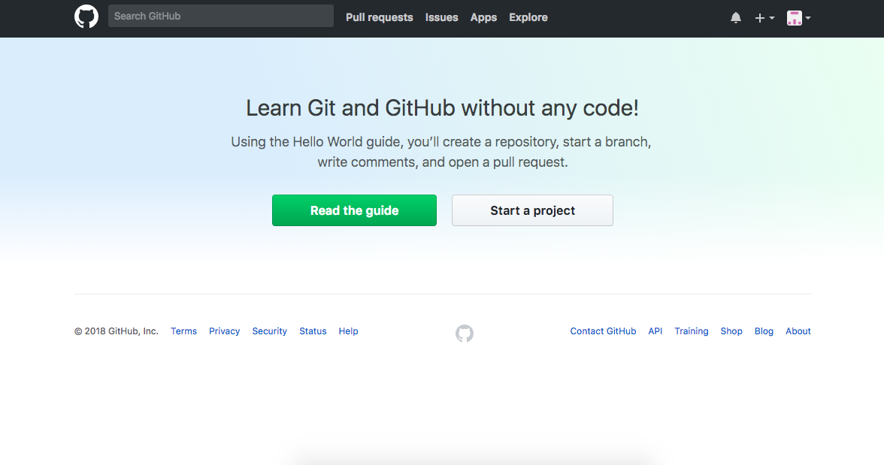
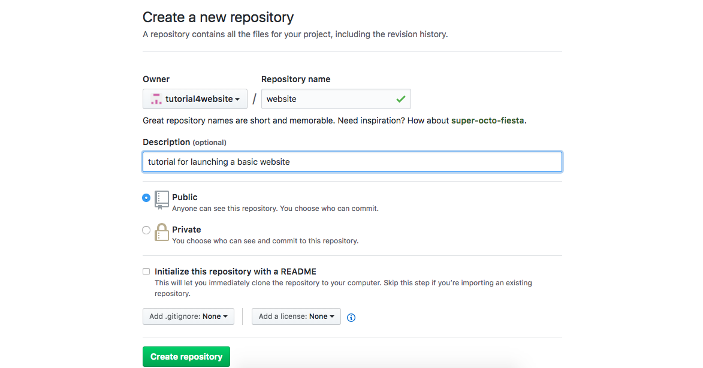

Login or create a github account
"start a project" or, if you have already done this, create a new repository.
Give it a name, description, etc.
After creating the repository, you will be redirected to this page. keep it open for the time being.

Go to your preferred text editor (i like sublime for front end), and code up your website. Make sure that every file relevant to the website is in a localized directory.
Below is a screenshot of my terminal commands. The commands were `cd desktop` (change the working directory to the desktop), `mkdir websitetutorial`, which makes a directory called websitetutorial (directory = folder) on your desktop. This is where everything for the website will be located. `pwd` prints the current working directory that you are located in (this is super important). For everything git, you want to be in the proper directory. `ls` lists the files located in websitetutorial. In websitetutorial, there are various pictures, and MOST IMPORTANTLY, a file named "index.html". Having the main html page named index.html lets GitHub know that it should create a gitpage for your website.

after you are finished coding your website(I'm just using a basic html page for this tutorial), refer back to the previous repository page that came up after creating the repository on github.
This next photo is what you will input into your terminal/whatever you use for git.